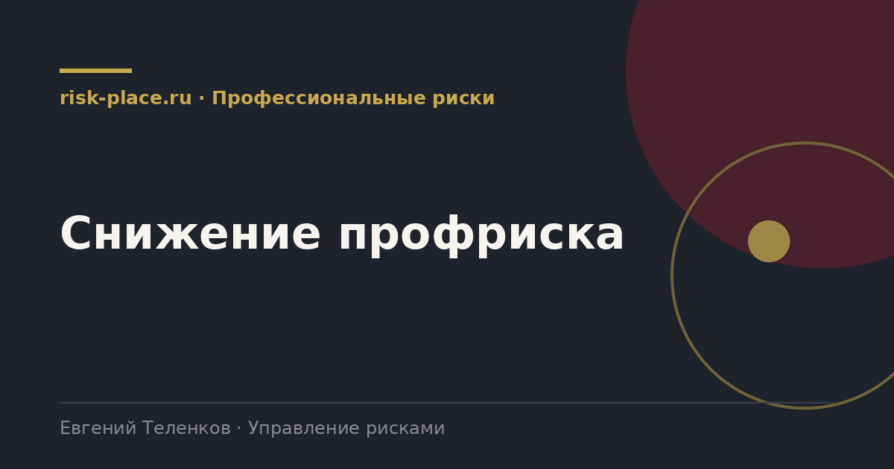

risk-
risk-Исключение опасности
- Отказ от опасной операции, изменение технологии, вынос процесса за пределы зоны присутствия людей
Главная · Библиотека · Профессиональные риски · Снижение профриска
Библиотека · Профессиональные риски
Порядок мер имеет значение. Выданная каска не заменяет убранное с высоты рабочее место.

Меры применяются в этом порядке, переход на следующий уровень допустим при обоснованной невозможности предыдущего.
Каждый следующий уровень надежнее зависит от человека, а значит менее надежен. Ограждение работает всегда, инструктаж работает, пока о нем помнят, средство защиты работает, пока его правильно надели и оно исправно.
Проверяющий смотрит именно на это. Если по опасности с высоким уровнем риска единственной мерой указаны средства индивидуальной защиты и инструктаж, возникает вопрос, рассматривались ли меры более высокого уровня и почему они отклонены. Ответ должен быть письменным и обоснованным, обычно через техническую невозможность или несоразмерность затрат.
Требования к строке плана.
Выполнение мероприятия и снижение риска это разные вещи. Подтверждением результативности служит повторная оценка риска после реализации меры с фиксацией нового уровня, а также объективные данные, результаты измерений, отсутствие происшествий по этой опасности за период, результаты проверки работоспособности барьера.
Полезная практика, которую редко применяют. По каждой реализованной мере через три месяца проводится короткая проверка, работает ли она фактически. Установленное ограждение может быть снято работниками ради удобства, блокировка отключена, регламент не соблюдаться. Без такой проверки план мероприятий превращается в отчет о потраченных деньгах.
Частые вопросы
Одна форма для любого вопроса
Расскажем о ближайших датах, предложим формат под ваш состав участников и назовем порядок бюджета.
Предпочитаете почту — напишите на info@risk-place.ru. Адрес: Москва, улица Скаковая, 32с2.